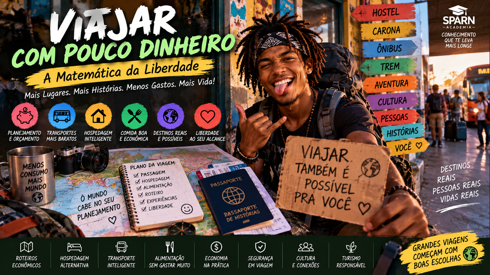
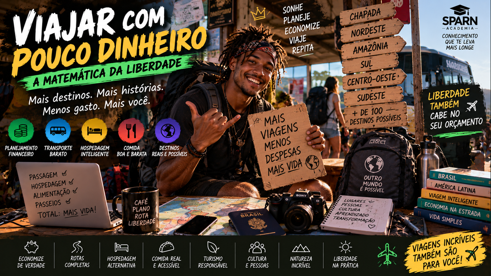

A Matemática da Liberdade — planeje gastos, compare escolhas e descubra como transformar orçamento limitado em experiências reais.
6 módulos24 aulasProjeto Minha Viagem Possível
0 de 24 aulas concluídas
A liberdade começa quando você aprende a fazer a conta
Viajar não precisa ser um privilégio reservado a quem tem muito dinheiro. Este curso ensina a redesenhar distância, duração, transporte, hospedagem e experiências para criar viagens compatíveis com sua realidade — sem romantizar perrengue e sem trocar segurança por economia.

01
A matemática da liberdade
Descubra que viajar barato não é viajar mal: é saber onde o dinheiro realmente muda a experiência.
Aula 01
O custo real de uma viagem
O preço da passagem é apenas uma parte. Transporte local, hospedagem, alimentação, atrações, taxas e pequenos gastos diários podem alterar completamente o total. A primeira habilidade é enxergar a viagem como sistema de custos.
Quando você conhece o total, deixa de perguntar apenas 'tenho dinheiro para viajar?' e passa a perguntar 'qual viagem cabe no dinheiro que tenho?'. Isso abre muito mais possibilidades.
Atividade prática
Escolha um destino e crie seis categorias de gasto para ele.
Aula 02
Custo por dia
Dividir o orçamento disponível pelos dias ajuda a visualizar limites. Mas nem todos os dias custam igual: deslocamentos e atrações podem concentrar despesas.
Use média diária como bússola, não como prisão. O objetivo é perceber cedo quando um gasto ameaça o restante da viagem.
Atividade prática
Crie um orçamento fictício de 7 dias e calcule sua média diária.
Aula 03
As três grandes despesas
Transporte, hospedagem e alimentação costumam consumir grande parte do orçamento. Economizar estrategicamente em uma delas pode liberar dinheiro para experiências que realmente importam.
Não corte tudo ao mesmo tempo. Escolha onde conforto importa para você e onde aceita simplificar.
Atividade prática
Classifique transporte, hospedagem e alimentação de 1 a 3 por importância pessoal.
Aula 04
Viajar sem dívida
Uma viagem perde liberdade quando vira meses de parcelas difíceis. Planejar com antecedência permite formar um fundo de viagem e adaptar o destino ao valor disponível.
Crédito pode ser ferramenta de pagamento, mas não deve esconder o custo real. Saiba quanto você já possui antes de comprometer renda futura.
Atividade prática
Defina um valor mensal possível para seu fundo de viagem e uma meta de seis meses.
Ferramenta do módulo — atualize sua Planilha da Liberdade com custos, escolhas e economia possível.
02
Transporte: compre tempo e distância com inteligência
Aprenda a comparar avião, ônibus, trem, transporte urbano e rotas combinadas.
Aula 05
Preço final, não preço anunciado
Tarifa barata pode ganhar bagagem, taxas, deslocamento ao aeroporto e alimentação durante longas conexões. Compare sempre o custo porta a porta.
Uma passagem mais cara pode ser economicamente melhor se economizar uma diária ou muitas horas.
Atividade prática
Compare duas opções de transporte incluindo todos os custos laterais.
Aula 06
Flexibilidade vale dinheiro
Viajar fora de datas muito disputadas e comparar dias próximos pode revelar diferenças importantes. Mas flexibilidade não significa comprar qualquer promoção.
Antes de pagar, confira duração, regras de alteração e se o destino realmente faz sentido para você.
Atividade prática
Escolha uma rota e compare três datas diferentes.
Aula 07
Rotas terrestres
Ônibus e outros modais terrestres podem ser excelentes para distâncias regionais e viagens com várias paradas. Eles também aproximam você da geografia entre destinos.
Avalie conforto, segurança, duração e horário de chegada. Economizar chegando às 3h da manhã pode criar outro custo.
Atividade prática
Monte uma rota com três cidades conectadas por transporte terrestre.
Aula 08
Transporte urbano
Caminhar, transporte público e localização da hospedagem formam uma única equação. Ficar longe pode reduzir a diária e aumentar o gasto diário.
Pesquise cartões, integrações e tarifas atuais nos canais oficiais do destino.
Atividade prática
Compare dois bairros pelo custo estimado de hospedagem mais transporte.
Ferramenta do módulo — atualize sua Planilha da Liberdade com custos, escolhas e economia possível.
03
Dormir e comer sem gastar a viagem inteira
Use hospedagem e alimentação como ferramentas de experiência e economia.
Aula 09
Hostel e quarto compartilhado
Dormitórios podem reduzir custo e facilitar encontros, mas compare segurança, armários, localização, limpeza e avaliações recentes.
Para duas ou mais pessoas, um quarto privado ou pousada às vezes se aproxima do mesmo preço. Faça a conta por pessoa.
Atividade prática
Compare três hospedagens e calcule custo por pessoa/noite.
Aula 10
Cozinha é liberdade
Hospedagem com cozinha permite equilibrar refeições preparadas e restaurantes. Café da manhã simples e lanches comprados em mercado podem reduzir muito gastos repetitivos.
Economizar não significa deixar de provar a culinária local. Escolha refeições que você realmente quer experimentar.
Atividade prática
Planeje alimentação de três dias combinando mercado, cozinha e comida local.
Aula 11
Comer como morador
Feiras, mercados, restaurantes populares e bairros fora dos corredores turísticos podem oferecer comida cotidiana e contato cultural.
Observe higiene, movimento e recomendações locais. O objetivo é conhecer melhor o destino, não apenas encontrar o menor preço.
Atividade prática
Pesquise três lugares de alimentação cotidiana em um destino.
Aula 12
Cuidado com a falsa economia
Hospedagem insegura, alimentação insuficiente ou deslocamento arriscado não são economia inteligente. Um orçamento bom protege necessidades básicas.
Pergunte sempre: estou reduzindo luxo ou reduzindo segurança? São decisões diferentes.
Atividade prática
Liste cinco coisas nas quais você não economizaria a ponto de comprometer segurança ou saúde.
Ferramenta do módulo — atualize sua Planilha da Liberdade com custos, escolhas e economia possível.
04
Mais experiências, menos consumo
Troque a lógica de comprar coisas pela lógica de viver lugares.
Aula 13
O melhor da cidade pode ser gratuito
Praças, praias, parques, centros culturais, feiras e caminhadas podem ocupar dias memoráveis. Pesquise programação pública e eventos gratuitos.
Monte o roteiro alternando atividades pagas e gratuitas. Assim você não sente que cada hora precisa gerar uma despesa.
Atividade prática
Crie um dia inteiro de viagem com três experiências gratuitas.
Aula 14
Escolha atrações que importam
Listas de 'imperdíveis' podem gerar gastos que não têm relação com seus interesses. Pague pelo que realmente desperta curiosidade.
Uma única experiência marcante pode valer mais do que cinco ingressos comprados por obrigação.
Atividade prática
Escolha apenas duas atrações pagas para um destino e justifique.
Aula 15
Lembrança não precisa ser objeto
Fotos, diário, desenho, receitas e conversas podem registrar uma viagem sem encher a mochila. Se comprar algo, priorize itens que tenham significado e origem clara.
Menos compras também reduzem bagagem e distração.
Atividade prática
Crie uma forma gratuita de registrar cada dia da viagem.
Aula 16
Cultura local
Conhecer pessoas, história e modos de vida dá profundidade à viagem. Respeite comunidades e não trate moradores como cenário.
Quando gastar, negócios locais podem manter mais valor circulando no território.
Atividade prática
Liste três maneiras respeitosas de se aproximar da cultura local.
Ferramenta do módulo — atualize sua Planilha da Liberdade com custos, escolhas e economia possível.
05
Ferramentas de economia
Construa hábitos de pesquisa, reserva e controle que continuam funcionando em qualquer destino.
Aula 17
Planilha simples
Uma planilha precisa de poucas colunas: previsto, gasto real e saldo por categoria. Atualize durante a viagem para perceber desvios cedo.
Não transforme férias em contabilidade permanente; cinco minutos por dia podem bastar.
Atividade prática
Crie sua tabela com transporte, hospedagem, alimentação, atrações e extras.
Aula 18
Alertas e comparação
Ferramentas de busca podem ajudar a observar preços, mas o valor exibido deve ser confirmado antes da compra. Compare condições e site oficial do fornecedor.
Evite comprar sob pressão de contadores e mensagens de urgência sem verificar.
Atividade prática
Defina uma faixa de preço aceitável antes de pesquisar passagem.
Aula 19
Reserva antecipada versus espontaneidade
Alguns itens ficam mais caros ou esgotam; outros podem ser decididos no destino. Reserve antecipadamente o que é crítico e preserve flexibilidade no restante.
Conheça regras de cancelamento antes de pagar.
Atividade prática
Divida seu roteiro em 'reservar agora', 'decidir depois' e 'não precisa reservar'.
Aula 20
Fundo de oportunidade
Além da reserva de emergência, separe uma pequena verba para algo especial que você descubra na viagem. Isso evita que toda surpresa pareça um problema financeiro.
O valor deve estar dentro do orçamento, não ser dinheiro inexistente.
Atividade prática
Inclua uma categoria 'descobertas' no seu orçamento.
Ferramenta do módulo — atualize sua Planilha da Liberdade com custos, escolhas e economia possível.
06
Projeto: Minha viagem possível
Transforme pouco dinheiro em um plano concreto, sem promessas mágicas.
Aula 21
Defina seu teto
Comece pelo valor disponível e só depois escolha duração e padrão da viagem. Essa inversão evita criar um sonho caro para depois tentar espremê-lo.
Se o orçamento é pequeno, reduza distância, dias ou conforto — não segurança.
Atividade prática
Defina um teto financeiro e três coisas que podem ser adaptadas.
Aula 22
Construa três versões
Crie uma versão essencial, uma equilibrada e uma confortável do mesmo roteiro. Comparar versões mostra exatamente o que cada gasto compra.
Você passa a decidir conscientemente em vez de simplesmente aceitar preços.
Atividade prática
Faça três orçamentos para a mesma viagem.
Aula 23
Plano de economia pré-viagem
Calcule quanto falta e divida pelos meses disponíveis. Identifique despesas temporárias que podem ser reduzidas para financiar a viagem sem comprometer necessidades importantes.
A meta precisa caber na vida real.
Atividade prática
Monte uma meta mensal e uma data possível de partida.
Aula 24
Liberdade é saber escolher
Viajar com pouco dinheiro não significa provar que você consegue sofrer mais. Significa aprender a direcionar recursos para experiências, pessoas e lugares que importam.
O resultado final é uma rota financeiramente sustentável e uma habilidade que você poderá repetir muitas vezes.
Atividade prática
Finalize seu Plano Viagem Possível com orçamento, rota e data-alvo.
Ferramenta do módulo — atualize sua Planilha da Liberdade com custos, escolhas e economia possível.

Projeto final — Minha Viagem Possível
Construa uma viagem completa começando pelo dinheiro que realmente está disponível.